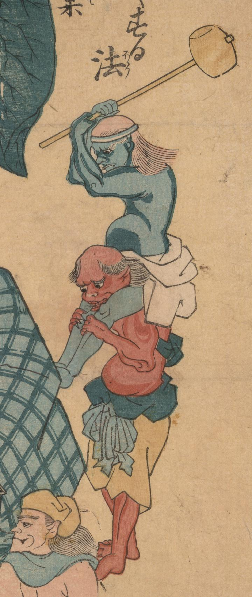

青い肌をした鬼のような化物。木槌を振りあげている。上半身裸で帯を頭に締め、赤い肌の鬼に跨っている。
著作者：歌川房種／出典：親書誌：U426_nichibunken_0003：麻疹軽くする法；ハシカカルクスルホウ／日付：2006／資源識別子：U426_nichibunken_0003_0001_0002
Copyright (c)2010- International Research Center for Japanese Studies, Kyoto, Japan. All rights reserved.